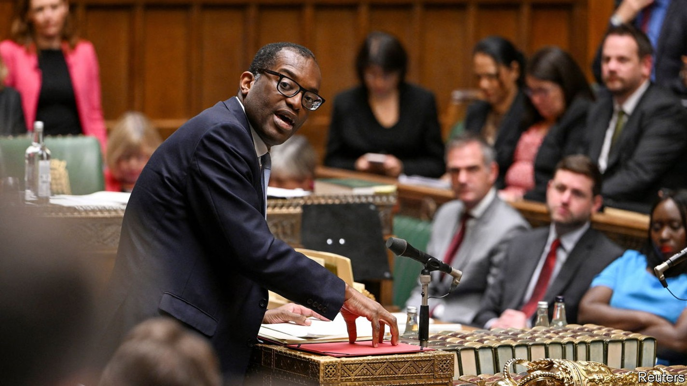
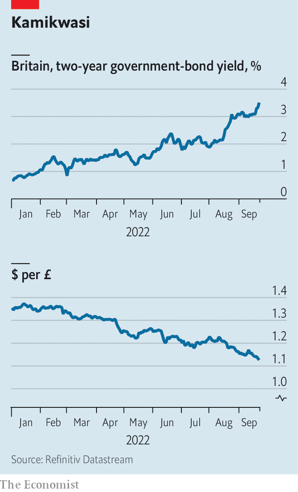

Britain’s chancellor offers up a reckless budget, fiscally and politically
Kwasi Kwarteng faces opposition from the markets, the Bank of England and even his own MPs

In a “Fiscal statement” on September 23rd Kwasi Kwarteng, Britain’s new chancellor, promised a “new approach for a new era”. He was as good as his word. In a breezy speech lasting a little under 30 minutes, Mr Kwarteng launched the biggest fiscal intervention by any chancellor in half a century, eviscerated his party’s record in government and sent sterling plunging while gilt yields spiked. He did so in service of an economic goal he is unlikely to reach while diminishing his party’s chances of winning the next election. A new approach indeed.
A plan to spend £60bn ($65bn, and falling) in the six months from October to reduce energy bills for households and businesses was momentous. But then came the permanent measures. The basic rate of income tax will be cut to 19% from 20%. A planned corporation-tax rise to 25% will not go ahead, Mr Kwarteng told MPs. Instead, businesses will continue to pay a rate of 19%, the lowest in the G20. The highest earners enjoyed an even better deal. Taxes on those who earn over £150,000 will be reduced to 40% from 45%. No longer will Britain have higher marginal tax rates than Norway, declared Mr Kwarteng. The government expects to have to raise another £70bn (3.2% of GDP) in debt over the remainder of the financial year, with more borrowing to come.
All this will be done in the name of growth, explained Mr Kwarteng. He and Liz Truss, the new prime minister, hold high taxes on both labour and capital largely to blame for Britain’s low growth. Slashing them will help the country return to a trend growth rate of 2.5% a year over the medium term, Mr Kwarteng promised; so too will a host of promised supply-side measures, such as pledges to reform planning rules and create low-tax investment zones. “We will focus on growth, even where that means taking difficult decisions,” said the chancellor.
Those decisions put the Conservative government at war with its own recent past. A cut to national insurance, a payroll tax, comes barely a year after it was introduced by Boris Johnson, the former prime minister, and Rishi Sunak, the ex-chancellor. The increase to corporation tax had not even come into force by the time Mr Kwarteng pledged to nix it. Proposed increases on alcohol duty introduced by Mr Sunak will be scrapped. Reforms to self-employed status introduced under Theresa May (who left office in 2019) and Boris Johnson (who left in September this year) will be repealed.
It also marks a philosophical break. For the past decade the Conservatives have based their appeal on a reputation for sound finances. Now, under Mr Kwarteng, debts will pile up. Tax cuts would increase Britain’s public-debt-to-GDP ratio from a little over 80% in 2021-22 to nearly 95% in 2026-7, say the Institute of Fiscal Studies (IFS), a think-tank and Citi, a bank. Even Mr Johnson, a spendthrift prime minister, accepted that increased spending had to be funded by extra taxes. Now the Conservatives, or at least the party’s front bench, are relaxed about unbalanced books.
At an annual cost of over 1.5% of GDP, the tax cuts alone are worth the most of any budget since 1972, according to the IFS. The comparison is uncomfortable, since that year’s budget—also premised on unleashing economic growth—started Britain on a path to crisis that culminated in an IMF bail-out in 1976. On the day of Mr Kwarteng’s statement, sterling fell by 3% against the dollar, its largest one-day drop since the start of the pandemic. For the first time since 1985, a pound is worth less than $1.10.
Mr Kwarteng’s policy is the inverse of the David Cameron years, when the party bet on tight spending while money was cheap. The Bank of England has already raised interest rates sharply in an attempt to contain inflation, which has reached 9.9% thanks largely to rocketing energy prices. Now it must offset the economic sugar rush of a bigger deficit. At the start of August, market prices suggested rates would peak at around 2.8% in 2023. By the time Mr Kwarteng started to deliver his statement, at 9.30am, the figure was about 5%. By lunchtime, it had risen to nearly 5.5%.

Normally the pound would benefit from higher interest rates luring in global capital. Yet because investors view sterling as a riskier asset than the dollar, euro or Japanese yen, there has been no such benefit. Despite expectations that the Bank of England and Federal Reserve will pursue broadly similar monetary policies, sterling has fallen against the dollar by around 20% since the start of the year and 10% since the start of August (see chart). A falling currency makes imports more expensive, worsening the Bank of England’s inflation problem.
Economic growth will cure all ills, runs Mr Kwarteng’s logic. The government is betting that regardless of higher interest rates, tax cuts will increase growth by lubricating the supply side of the economy, encouraging work and investment. There is some evidence that this works, especially with corporate taxes—but not to anything like the extent that Mr Kwarteng needs. The government’s tax cuts are of comparable size to those passed in America under President Donald Trump in 2017. It is hard to say what their true effect was. But in the two years that Mr Trump’s cut was in operation before the pandemic struck, America’s economy grew at an average annual rate of 2.4%, well below the 3% growth the Trump administration had targeted. In the medium term Mr Kwarteng hopes for growth of 2.5%; in the short term the Bank of England expects a recession.
Evidence, however, comes second to ideology under Mr Kwarteng and Ms Truss. They think taxes are too high and so have cut them, no matter what the median voter, think-tanks, or the market may think. Other politicians couch their proposals in terms of necessity. George Osborne, the chancellor under Mr Cameron, argued that his dream of a smaller state was necessary repentance for previous overspending. In contrast Mr Kwarteng and Ms Truss are fervent in their beliefs, and do not mind who knows it.
Mr Kwarteng may not care about being popular. But his fellow MPs, arrayed glumly behind him while he spoke, do. In his statement Mr Kwarteng laid into his own party’s record of power. Britain is set to suffer from the highest tax burden since the 1940s, he complained. The chancellor pledged to turn a “vicious cycle of stagnation into a virtuous cycle of growth”. It is not surprising for a chancellor to attack the record of his predecessors. But it is when they hail from the same party. “Can I thank the chancellor on his comprehensive demolition of the record of the last 12 years?” began Rachel Reeves, Labour’s shadow chancellor, in her response.
Tax cuts for the rich and for business are unlikely to go down well with new Tory voters drawn to Mr Johnson’s vision of big-state conservatism, particularly at a time of rising bills. And high interest rates will whack homeowners, the bedrock of the Conservative vote. An interest rate of just 3% today results in mortgages that absorb the same share of income as a rate of 14% did in 1980, after adjusting for the fact that mortgages are bigger and mortgage interest is no longer tax-deductible, calculates Neal Hudson of BuiltPlace, a housing website. Mr Kwarteng’s desire to boost growth is laudable, but his plan is not going to work economically. It is likely to backfire politically, too. ■